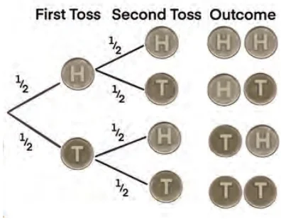

A tree diagram is a visual representation used to list all possible outcomes of a multi-step experiment. A multi-step experiment involves a series of independent trials. For example, tossing a coin two times, or rolling a dice three times are examples of multi-step experiments. Each branch of the tree represents a possible outcome, and branches split to show different paths for subsequent events.
A tree diagram is useful for
- Visualising multi-step experiments, where each path from start to end represents one complete outcome.
- Listing all outcomes of a sample space.
So far in this chapter, we have seen examples of single-step experiments. Let us look at an example of a multi-step experiment.
Example 7: Experiment: Toss a fair coin two times.
Tree Diagram (See Fig. 7.6):

From a single point draw a line to each of the possible outcomes of the first toss. From each of these outcomes draw two lines to each possible outcome. Do you see that the tree diagram shows 4 possible outcomes?
Hence the Sample Space
\(\text{S} = \{\text{HH, HT, TH, TT}\}\).
Also, the theoretical probabilities of each outcome are mentioned on the branch representing that outcome.
\(\text{Theoretical Probability (P)} = \frac{\text{Number of favourable outcomes}}{\text{Number of possible outcomes}}\).
Let us consider the event of getting Heads twice. This is represented by the outcome HH.
\(\text{Probability of HH} = \frac{1}{4} = 0.25\) or 25%.
Think and Reflect
Can you calculate the probability of getting one head and one tail?